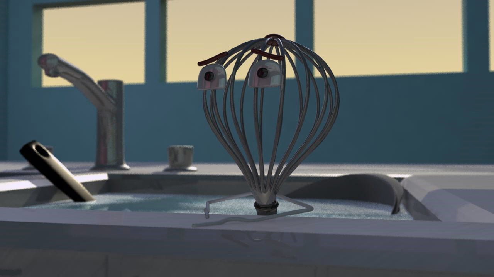
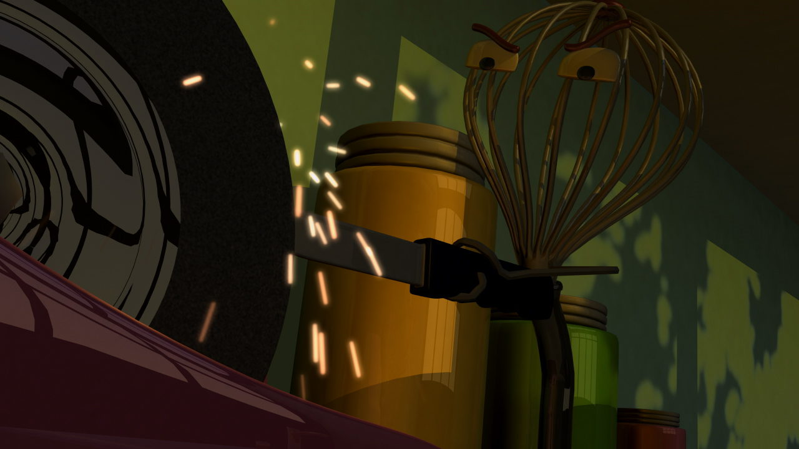
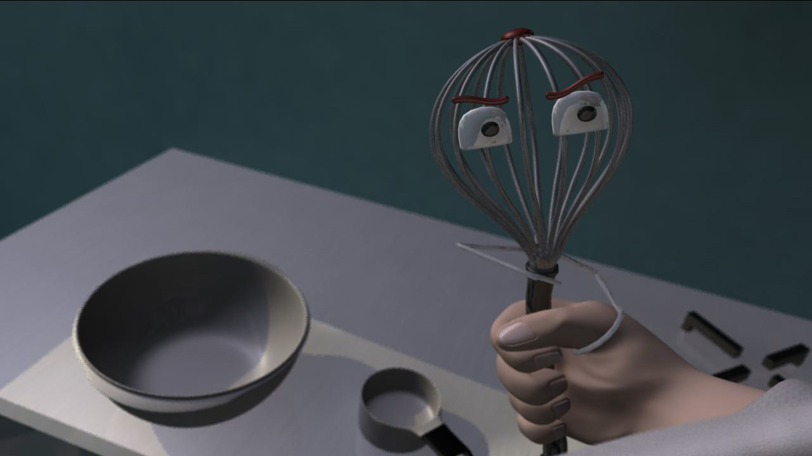

{Whiskey Endeavors: Direction, Modeling, Lighting Animation, Editing;}
Whiskey Endeavors is a four and a half minute animation I wrote, directed and produced with a small team. It's about a disgruntled whisk who just wants to be recognized for his hard work.
 We used the standard Maya and Photoshop for asset creation and animation. I used Adobe Premiere to edit the shots together, add sound and do the other post-production.
